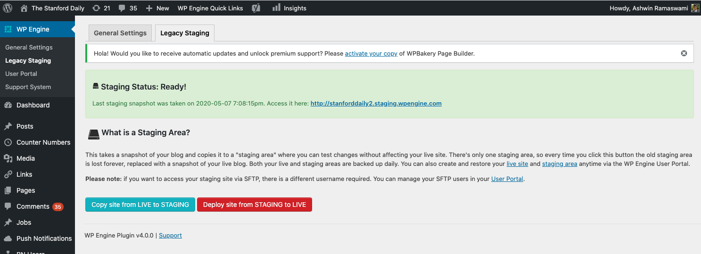

Backend
Our backend uses WordPress.
Local development¶
Install Docker Compose. Then, make sure the Docker daemon is running.
Run the following commands:
git clone https://github.com/TheStanfordDaily/stanforddaily-wordpress
cd stanforddaily-wordpress
docker-compose up
Then, open up http://localhost:8000/wp-admin/ in your browser, and you will see the WordPress admin. You should go to the "themes" section and enable the "tsd-headless" theme.
Note
This will work, though you won't be able to see any UI. This is because this is a "headless CMS" -- all the UI is handled by the React frontend.
Directory structure¶
Don't touch any of the default wordpress generated files (wp-admin, wp-includes, etc.), as they are auto-generated upon WordPress installation. They should only be updated if you decide to upgrade to a new version of WordPress.
ads.txt¶
This is the file that gets served (with some modifications) at https://www.stanforddaily.com/ads.txt.
TODO
I'm not sure if this is the actual file -- will need to double check on this - Ashwin
wp-content/themes¶
This directory contains all the themes. The only theme we have is called "TSD Headless" and is located at wp-content/themes/tsd-headless.
This theme is based on postlight/headless-wp-starter but with a few modifications.
wp-content/plugins¶
This directory contains all plugins. Some of these are plugins are not developed by us; the ones developed by us are prefixed by tsd:
| Plugin folder name | Description |
|---|---|
| tsd-jobs | REST API endpoints for the jobs board. |
| tsd-json | Custom REST API endpoints that are used by the React frontend of https://www.stanforddaily.com. |
| tsd-push-notification | WordPress admin pages for sending push notifications through Expo's push notification service on a specific article |
| tsd_authors_plugin | Author information for the mobile app (not in use, should delete) |
| tsd_plugin_magazine_posts | Create a "magazine posts" post type on the WordPress admin page (not in use, should delete) |
| tsd_plugin_rss_digest | Customizes the RSS feed (not in use since we switched to a hand-written digest in Fall 2019, should delete) |
Warning
Do not install any plugins directly from the WordPress admin console. This makes it harder to keep everything in sync and version plugins in source control. Instead, if you want to add a new WordPress plugin, first download the plugin and then copy the folder to the wp-content/plugins folder.
Note
If you create a new plugin and then deploy it, you will need to go to the WordPress Admin console plugins page and then manually enable it.
test¶
This directory contains some end-to-end tests. Right now, we only test the jobs plugin, but we could add more tests in the future.
Deployment¶
We deploy our site to WPEngine. Deployment of the website happens automatically to both our staging website and production website through a GitHub Actions script, whenever new code is pushed to master.
Architecture¶
WPEngine is a managed WordPress hosting service. The site on WPEngine for our main WordPress website is called stanforddaily2. For each of our sites (production and staging), WPEngine creates both a MySQL database and a PHP instance.
Our staging website is available at: http://stanforddaily2.staging.wpengine.com/wp-admin/
Our production website is available at: https://wp.stanforddaily.com/wp-admin/
Copying from production to staging¶
Sometimes you may want to copy data from the production to the staging website. To do so, go to the "WP Engine" tab in WordPress Admin and click "Copy site from LIVE to STAGING" (don't click "Deploy site from STAGING to LIVE"!).
You will need admin access on WordPress to do this.

Manual deployment¶
If, for some reason, you need to manually deploy, first generate a new SSH key using the ssh-keygen tool (don't include a passphrase). Then go to the "Git push" section and add the new public key to the list of authorized Git push users.

Finally, you can do the following steps to manually deploy:
# deploy to staging:
git push git@git.wpengine.com:staging/stanforddaily2.git master
# deploy to production:
git push git@git.wpengine.com:production/stanforddaily2.git master
Sometimes your push may be rejected because you need to pull new updates (such as a WordPress maintenance upgrade) from the remote. In this case, first pull the latest changes:
git pull git@git.wpengine.com:production/stanforddaily2.git master
Secrets¶
We have one secret in the GitHub repository: WPENGINE_SSH_PRIVATE_KEY.
If you need to regenerate the secret (in the event of a secret compromise), follow the steps in the "Manual deployment" section to generate a new SSH key. Then, you can add a new public key to WPEngine with the name "github-actions-deploy".
Set the WPENGINE_SSH_PRIVATE_KEY secret to be equal to the value of the generated private key.
Future improvements¶
We should add more tests, especially to the tsd-json plugin.